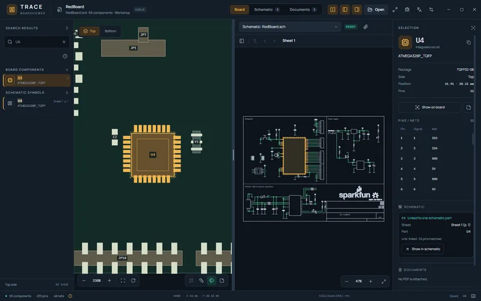

Boardview, kapcsolási rajz és adatlap egy ablakban
A TRACE ingyenes, nyílt forrású boardview-megjelenítő és paneljavítási munkafelület. Nyiss meg egy támogatott panelnézetet, csatold a hozzá tartozó kapcsolási rajzot és adatlapokat, majd keress alkatrész, érték vagy hálózatnév alapján.
- Aktuális stabil projektkiadás · 1.3.3
- Windows x64 · hordozható EXE
- macOS és Linux · kísérleti
- MIT · fiók és telemetria nélkül
Így segít egy javítási munkamenetben
- Nyisd meg a panel- vagy boardview-fájlt. A TRACE a fájl tartalma alapján próbálja felismerni a formátumot; a kiterjesztés önmagában nem elég.
- Csatold a hozzá tartozó KiCad, EAGLE vagy Altium SchDoc kapcsolási rajzot és a PDF-adatlapokat.
- Keress alkatrészjelölésre, például
U4, értékre, például10k, vagy netnévre. A találatra kattintva a program megmutatja a hozzá tartozó panelbeli pontokat és hálózatot. - Válts a panel és a kapcsolási rajz között, hogy ellenőrizd a pontos névegyezést. Az eltérő vagy kétértelmű kapcsolatokat a TRACE jelzi; nem találgat.
- Írd fel a saját méréseidet egy alkatrészhez vagy lábhoz. A TRACE megőrzi a jegyzeteidet, de nem diagnosztizál hibát, és nem módosítja a tervfájlt.

A részletes használati útmutató angolul képernyőképekkel mutatja be a megnyitást, csatolást, keresést és keresztkijelölést.
Formátumok és fontos korlátok
A támogatás formátumonként és azon belül is változatonként eltér. Néhány olvasó valódi fájlokon is ellenőrzött, mások csak mesterséges tesztfájlokon; az ismeretlen vagy nem támogatott változatot a TRACE indoklással elutasíthatja.
| Fájltípus | Mit jelenít meg? | Ellenőrzés és korlát |
|---|---|---|
KiCad PCB (.kicad_pcb) | Alkatrészek, lábak, netek és panelkörvonal; a netek kijelölhetők. | Több valós KiCad tervvel ellenőrizve. A rézvezetékek, zónák és furatok megjelenítése nem része ennek az olvasónak. |
EAGLE XML panel (.brd) | Alkatrészek, padek, netek és körvonal; a hozzá tartozó .sch rajz csatolható. | Kiválasztott valós XML fájlokkal ellenőrizve. Az EAGLE 5.12 és korábbi bináris panelformátuma nem támogatott. |
Altium PcbDoc (.pcbdoc, .cmpcbdoc, .cspcbdoc) és GenCAD 1.4 (.cad, .gcd) | Kiválasztott paneladatok; Altium kapcsolási rajz is csatolható. | A támogatott változat és a geometria részletei formátumfüggők. Lásd az angol támogatási táblázatot. |
Javítási boardview-k: például .bvr, .bdv, .bv, .bv2, egyes .brd fájlok | Alkatrészek, lábak, hálózatnevek és kijelölés. | Kiválasztott exportokkal ellenőrizve; egyes formátumok nem tartalmaznak padméretet, ezért a geometria becsült vagy csak jelölőpont. |
EasyEDA Pro V3 (.epro2) | Alkatrészek, padek, netek és panelkörvonal. | Csak a támogatott Pro projektváltozatok. A részletes EasyEDA-útmutató angolul leírja a kiválasztást és a korlátokat. |
ODB++ archívum (.zip, .tgz, .tar.gz) | Rézpadek, vonalak, ívek és fúrt lyukak 2D nézete. | Csak KiCad 9 kicad-cli exportjaiból készült nyílt terveken ellenőrizve; gyártói exportot nem teszteltek. A rézkitöltések és feliratok nem olvashatók. |
A legtöbb olvasónál 64 MiB a fájlméretkorlát. A Cadence Allegro natív paneljeinél a felső határ 240 MiB és legfeljebb 4 millió objektum. A TRACE megjelenítő, nem tervezőszoftver: nem szerkeszt panelt, nem futtat DRC-t, és a netkiemelés nem helyettesíti a rézvezeték vizsgálatát.
A teljes, változatonkénti lista: SUPPORT.md angolul · összehasonlítás és további korlátok angolul.
Letöltés és platformok
Az 1.3.3 a projekt aktuális stabil kiadása. A csomagok státusza platformonként eltér; a kiadási oldalon megtalálod a fájlokat és a hozzájuk tartozó ellenőrzőösszegeket.
| Platform | 1.3.3 csomag | Státusz és tudnivaló |
|---|---|---|
| Windows x64 | Hordozható EXE, telepítő nélkül | Ez a Windows stabil célplatformja. A fájl nincs kóddal aláírva, ezért a SmartScreen figyelmeztethet; futtatás előtt ellenőrizd a SHA-256 értéket a kiadási oldalon. |
| macOS, Apple silicon | ZIP, arm64; macOS 13 vagy újabb | Kísérleti, ad-hoc aláírt, nincs notarizálva. A Gatekeeper letilthatja; ha ez történik, ne kerüld meg a védelmet. Részletek a Mac útmutatóban angolul. |
| Linux x86-64 | .deb vagy AppImage | Kísérleti, aláíratlan csomagok. A .deb Ubuntu 24.04-en tesztelt; más disztribúciókon az AppImage nincs tesztelve. A Linuxos natív elfogadási teszt még függőben van. Részletek a Linux oldalon angolul. |
Adatvédelem, támogatás és hibajelzés
A panelt, a kapcsolási rajzot és az adatlapokat a program a saját gépeden olvassa; ezeket nem tölti fel. Nincs fiók és telemetria. A hálózati funkciók külön választhatók: kiadásellenőrzés, támogatás ellenőrzése és hibajelentés.
Hibajelentésnél előbb átnézheted és szerkesztheted a szöveget; elküldeni csak a saját jóváhagyásoddal lehet. Panel- és dokumentumfájlok nem kerülnek a jelentésbe. Ha a jelentés leírásába fájlnevet vagy útvonalat írsz, ellenőrizd elküldés előtt. A projekt támogatása önkéntes, a kezdő értesítést átugorhatod.
Hibajelzés részletes menete angolul · Támogatási lehetőségek angolul · Forráskód és hibajegyek